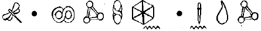
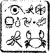

MURMANSK
MURMANSK’le Severomorsk arasındaki Kuzey Denizi bir zamanların güçlü Rusya donanmasının denizaltı mezarlığı haline gelmişti. Kıyı şeridindeki değişik koy ve fiyortlarının altında yüz kadar nükleer denizaltı paslanmaya bırakılmıştı. Yoldan geçen meraklıları uyarmak için yalnızca tek bir tehlike işareti ya da devriye gezen bir deniz polisi vardı. Geceleri parıltıyı görebilmek için çok dikkatlice bakmanız ya da vızıltıyı duymak için fazla dikkatlice dinlemeniz gerekmiyordu.
Nikodim de böyle bir denizaltıydı. Tayfun sınıfından, paslı bacaları ve sızıntılı reaktörleri olan, yirmi yıllık bir gemiydi. Bu pek sağlıklı bir birleşim değildi. Ama Mafyanın kilit adamı Britva, uşaklarına Baba Artemis Fowl’un burada değiş-tokuş edilmesi konusunda talimat vermişti.
Mikhael Vassikin ve Kamar durumdan hiç de memnun değillerdi. İki gündür kaptan köşkünde kalıyorlardı ve geçen her dakikanın hayatlarını kısalttığına inanıyorlardı.
Vassikin öksürdü. “Şunu duyuyor musun? Bağırsaklarım iyi değil. Radyasyondan olmalı, haberin olsun.”
“Bu iş çok saçma,” diye homurdandı Kamar. “Fowl on üç yaşında. On üç! Daha bebek sayılır. Bir çocuk beş milyon doları nasıl toparlayabilir ki? Delilik bu.”
Vassikin ranzasında dik oturdu. “Belki de değildir. Onun hakkında öyküler duydum. Güçleri olduğundan söz ediyorlar.”
Kamar burnundan soludu. “Güçler mi? Büyü mü yani? Git de şu işe yaramaz kafanı reaktöre tıkıştır.”
“Hayır, İnterpol’de bir adamım var. Bu oğlanla ilgili kapsamlı bir dosya tutuyorlar. Düşünsene, henüz on üç yaşında ve kapsamlı bir dosyası var? Ben otuz yedi yaşındayım ve hâlâ İnterpol’de dosyam yok.” Rus düş kırıklığına uğramış gibiydi.
“Kapsamlı bir dosya demek. Bunun büyüyle ne ilgisi var peki?”
“Haber kaynağım, bu Fowl denilen çocuğun aynı gün içinde dünyanın dört bir yanında görüldüğüne yemin ediyor. Aynı saatte hem de.”
Kamar etkilenmemişti. “Haber kaynağın senden de ödlek biri.”
“İstemiyorsan inanma. Ama ben bu lanet gemiden canlı kurtulabilirsem sevineceğim. Hangi yoldan olursa olsun.” Kamar kürk şapkasına kulaklarına kadar çekti. “Pekala. Gidelim. Zamanı geldi.”
“En sonunda,” diye iç geçirdi Vassikin.
İki adam tutukluyu yan kamaradan aldılar. Kaçmaya kalkışacağından korkmuyorlardı. Bir eksik bacak ve başına geçirilmiş kukuletayla bunu yapamazdı. Vassikin, Baba Fowl’u omzuna atıp kumanda kulesinin basamaklarını tırmandı.
Kamar destek güçlerle haberleşmek için bir telsiz kullandı. Donmuş çalılıklar ve kar kümelerinin içinde saklanan yüzün üstünde suçlu vardı. Sigara izmaritleri karanlığın içinde ateşböcekleri gibi parlıyordu.
“Söndürün şu sigaraları, sersemler,” diye fısıldadı açık bir frekanstan. “Saat neredeyse gece yarısı. Fowl her an burada olabilir. Unutmayın, ben emir verine kadar tek bir atış bile yok. Sonra herkes ateş edecek.”
Kara atılan yüz sigara izmaritinin tıslaması neredeyse duyulabiliyordu. Yüz adam. Bu masraflı bir harekâttı. Ama bu, Britva’nın söz verdiği yüzde yirminin yanında okyanustaki bir su damlası gibi kalırdı.
Bu Fowl denen çocuk hangi yönden gelirse gelsin, ölümcül bir yaylım ateşine tutulacaktı. Ne o, ne de babası için bir kurtuluş yolu yoktu, oysa o ve Vassikin çelik kumanda kulesinin arkasında güvende olacaklardı.
Kamar sırıttı. Görelim bakalım ne kadar büyün varmış, İrlanskii.
Holly manzarayı deneyimli bir Recon subayının gözleriyle karanlıkta görmeyi sağlayan, miğferindeki yüksek- dirençli filtrelerinin ardından izliyordu. Kâhya eski tip dürbünleri kullanmak zorunda kalmıştı.
“Kaç sigara saydın?”
‘Seksenden fazla,” diye yanıt verdi yüzbaşı. “Yüz kadar adam olabilir. Oraya girersen cesedin çıkar.”
Root başıyla onayladı. Taktiksel bir kâbustu bu.
Fiyordun karşı tarafındaki dik yamaçlı bir tepenin üzerinde, açıkta duruyorlardı. Konsey Artemis’in hizmetlerinden dolayı kanat takmalarını bile onaylamıştı.
Foaly, Artemis’in bilgisayarında bir posta taraması yapmış ve şu mesajı bulmuştu: Beş milyon dolar. Nikodim gemisi. Murmansk. On dürdü, gece yarısı. Bu, kısa ve özdü. Söylenecek başka ne olabilirdi ki? Baba Artemis’i düşüş noktasına götürülmeden önce kurtarma fırsatını elden kaçırmışlardı, şimdi kozlar Mafya’nın elindeydi.
Karın üzerine bir lazer kalemiyle bir grafik çizen Kâhya’nın çevresinde toplandılar.
“Hedefin burada tutulduğunu tahmin ediyorum, şu kumanda kulesinin içinde. Oraya varmak için denizaltını boyda boya geçmek gerekiyor. Çevrede gizlenen yüze yakın adamları var. Hava desteğimiz ve uydu bilgimiz yok, hem de çok az silahımız var.” Kâhya iç geçirdi. “Üzgünüm, Artemis. Hiçbir çıkar yol bulamıyorum.”
Holly grafiği inceledi. “Bir zaman durdurması günler sürer. Radyasyon yüzünden kalkanlarımız da bir işe yaramaz ve hipnotize edecek kadar onlara yaklaşmamıza da olanak yok.”
“Peki ya LEP’in silahları?” diye sordu Artemis, yanıtını bildiği halde.
Root yakmadığı purosunu çiğnedi. “Bu konuyu tartıştık, Artemis. İstediğin kadar ateşli silahımız var ama ateş etmeye başlarsak ilk hedefleri baban olur. Standart kaçırma kuralları.”
Artemis, LEP’in sahra parkalarından birini boğazına kadar çekip kabaca çizilmiş plana baktı. “Peki, ya onlara para versek?”
Foaly eski yazıcısında her biri küçük kâğıt paralardan oluşan, beş milyon dolar basmıştı. Hatta, paraları hafifçe kırıştırmaları için bir sprite mangasından yardım bile istemişti.
Kâhya başını salladı. “Bu insanlar böyle çalışmazlar. Bay Fowl hayatta olduğu sürece olası bir düşman sayılıyor. Bu yüzden ölmesi gerekliydi.”
Artemis yavaşça başını salladı. Kesinlikle başka bir yolu yoktu. Kuzey Kutbu mekik istasyonunda yaptığı planı uygulamaya koyması gerekiyordu.
“Pekala millet,” dedi. “Bir planım var. Ama size biraz aşırıymış gibi görünebilir.”
Mikhael Vassikin’in cep telefonu Kuzey Kutbunun sessizliğini yararcasına çaldı. Vassikin az daha kumanda kulesinin ambar kapağından içeri düşecekti.
“Da? Ne var? Meşgulüm.”
“Ben Fowl,” dedi kusursuz Rusça konuşan ve Kuzey Kutbu buzundan bile soğuk bir ses. “Saat gece yarısı. Buradayım.”
Mikhael kendi çevresinde dönüp etraftı dürbünleriyle taradı.
“Burada mı? Nerede? Hiçbir şey görmüyorum.”
“Yeterince yakındayım.”
“Bu numarayı nasıl buldun?”
Ahizeden bir kıkırdama yükseldi. Bu ses Vassikin’in sinirlerini ayağa kaldırdı.
“Birini tanıyorum. Onda tüm numaralar var.”
Mikhael derin soluk alıp sakinleşmeye çalıştı. “Para yanında mı?”
“Tabii. Paket yanında mı?”
“Hemen şurada.”
Yine o soğuk kıkırdama geldi. “Tek görebildiğim şişko bir budala, küçük bir fare ve kukuletalı biri. 'Herhangi biri olabilir. Kuzenin Yuri’nin karşılığında beş milyon ödeyecek değilim.”
Vassikin kulenin kenarına gizlendi. “Fowl bizi görebiliyor!” diye fısıldadı Kamar’a. “Eğil.”
Kamar hızla kulenin öbür yanma koşup adamlarına yeni bir hat açtı. “O burada. Fowl burada. Bölgeyi araştırın.”
Vassikin telefonu yeniden kulağına götürdü. “Öyleyse buraya gel de bak. Daha yakından görürsün.
“Buradan da iyi görebiliyorum. Kukuletayı çıkart yeter.”
Mikhael telefonu eliyle kapadı. “Kukuletayı çıkartmamı istiyor. Ne yapayım?”
Kamar iç geçirdi. Bu işteki beynin kim olduğu açıkça belli oluyordu. “Çıkart. Ne fark eder ki? Nasıl olsa her ikisi de beş dakika içinde ölmüş olacaklar.
“Pekala, Fowl. Kukuletayı çıkarıyorum. Az sonra göreceğin yüz babana ait.” İri yarı Rus, tutukluyu kulenin kenarının epeyce üzerine dayadı. Bir eliyle uzanıp kaba çuvaldan kukuletayı başından çekip çıkarttı.
Hattın öbür ucunda derin bir soluk alışı duydu.
Artemis ödünç LEP miğferinin filtrelerinin ardından, kumanda kulesini sanki bir metre uzağındaymış gibi görebiliyordu. Kukuleta çıkınca kendini tutamayıp derin bir soluk aldı.
Bu babasıydı. Kesinlikle farklı görünüyordu. Ama tanınmayacak durumda değildi. Birinci Artemis Fowl, bu hiç kuşkusuz oydu.
“Pekala,” dedi kulağının dibindeki Rusça ses. “O mu?”
Artemis sesinin titremesine engel olmak için duraksadı. “Evet,” dedi. “Bu o. Tebrikler. Elinizde oldukça değerli bir parça var.”
Kumanda kulesindeki Vassikin arkadaşına zafer işareti yaptı. “Oymuş,” diye fısıldadı. “Para içinde yüzeceğiz.” Kamar o kadar emin olamıyordu. Para eline geçinceye kadar kutlama yapılmayacaktı.
Kâhya elindeki perilere ait Uzakatış tüfeğini sabitleştirdi. Onu LEP’in silah deposundan seçmişti. Bin beş yüz metre. Bu kolay bir atış değildi. Ama rüzgâr yoktu ve Foaly ona kendi kendine nişan alabilen bir teleskop vermişti. Büyük Artemis Fowl’un gövdesi çarpı işaretinin merkezine ortalanmıştı.
Kâhya derin bir soluk aldı. “Artemis. Emin misin? Bu çok tehlikeli.”
Artemis yanıt vermedi ve belki yüzüncü kez Holly’nin tam yerinde olup olmadığını kontrol etti. Tabii ki emin değildi. Çevirdikleri bu dolapta bir milyon şey ters gidebilirdi ama başka bir seçeneği var mıydı?
Artemis başıyla onayladı. Yalnızca bir kez.
Kâhya silahı ateşledi.
Kurşun Büyük Artemis’in omzuna isabet etti. Adam kendi çevresinde dönüp şaşkınlık içindeki Vassikin’in üzerine yığıldı.
Rus iğrenerek, kanlar içindeki İrlandalıyı kumanda kulesinin ucuna doğru fırlattı. Büyük Artemis geminin omurgası boyunca kayarak, denizaltına yapışık duran, ince buz tabakasına çarptı.
“Onu vurdu,” diye cıyakladı holigan. “Bu şeytan öz babasını vurdu.
Kamar sersemlemişti. “Salak!” diye inledi. “Az önce Rehinemizi suya attın!” Gözlerini Kuzey Kutbunun karanlık sularına dikti. İrlanskii’den geriye, dalgacıklardan başka bir şey kalmamıştı.
“İstersen git aşağı ve bul onu,” dedi Vassikin, öfke içinde.
“Ölmüş müydü?”
Ortağı omuz silkti. “Bilmem. Tamamen kanlar içindeydi. Kurşun işini bitirmezse, sular bitirir nasıl olsa. Her neyse, bizim hatamız değildi.”
Kamar kaba bir küfür savurdu. “Britva’nın olaya bu gözle bakacağını sanmam.”
“Britva,” diye soludu Vassikin. Menidzher’i tek ilgilendiren şey paraydı. “Ah, Tanrım. Öldük biz.”
Cep telefonu güvertenin üzerinde tıkırdadı. Ahizesi titriyordu. Fowl hâlâ hattın öbür uçundaydı.
Mikhael telefonu sanki bir el bombasıymışçasına kaldırdı. “Fowl? Orada mısın?”
“Evet,” diye yanıtladı karşı taraftaki ses.
“Seni kaçık şeytan! Neler yapıyorsun? Baban ölmek üzere. Bir anlaşmamız var sanıyordum!”
“Hâlâ var. Yeni bir anlaşma. Bu gece hâlâ biraz para kazanabilirsin.”
Mikhael telaşlanmayı bir yana bırakıp dikkatini Artemis’e verdi. Bu kâbustan kurtulmanın bir yolu olabilir miydi? “Dinliyorum.”
“En sön istediğim şey babamın dönüp de bu son iki yılda geliştirdiklerimi bir anda yok etmesi.”
Mikhael başını salladı. Bu ona çok mantıklı geliyordu. “Bu yüzden ölmesi gerek. Emin olmak için bunu kendim halletmem gerekiyordu. Ama yine de size küçük bir şeyler verebilirim.”
Mikhael güçlükle soluk alabiliyordu. “Küçük bir şeyler mi?”
“Fidyeyi. Beş milyonun tamamını.”
“Peki bunu neden yapasın ki?”
“Sen parayı alırsın; ben de evime güvende dönerim. Yeterince adil mi?”
“Bana adilmiş gibi görünüyor?”
“Pekala. Şimdi koyun karşı tarafına bak, fiyordun üstüne doğru.”
Mikhael baktı. Karlarla kaplı tepenin ucunda parlayan bir işaret fişeği vardı.
“Fişeğe bağlı bir evrak çantası var. Ateş on dakika içinde sönecek. Yerinizde olsam bu süre içinde oraya varırdım. Aksi halde çantayı bulmak yıllarını alabilir.”
Mikhael hattı kapama zahmetine bile girmedi. Telefonu yere atıp koşmaya başladı. “Para,” diye bağırdı Kamar ’a. “Yukarıda. Fişek.”
Kamar bir solukta ona yetişmişti, telsizden talimatlar yağdırıyordu. Birinin o paraya ulaşması gerekiyordu. Ortada sahip çıkılacak beş milyon dolar varken, boğulan bir İrlanskii kimin umurundaydı?
Büyük Artemis vurulur vurulmaz, Root, Holly’ye işaret verdi. “Git!” diye emretti.
Yüzbaşı Short kanatlarını harekete geçirip tepenin doruğundan aşağı doğru fırladı. Elbette ki tüm bu yaptıkları kurallara aykırıydı ama şu an Konsey, Foaly’yi ihanetten az çok suçlu bulduğu için işi biraz gevşetmişti. Uyulması gereken tek şart, sentorun bağlantısını hiç kesmemesi ve yakalanmaları ya da yaralanmaları durumunda, gerek kendileri gerekse peri teknolojileri ortadan kolayca kaldırılabilsin diye, grubun her üyesinin uzaktan kumanda edilebilen patlayıcılarla donatılmalarıydı.
Holly denizaltında olanları siperliğinden izlemişti. Büyük Artemis’in omzundan vurulup iri yarı Rus’un üzerine yığıldığını görmüştü. Kan görüş alanına kaydedilmişti. Hâlâ ısıl algılayıcısı tarafından görüntülenebilecek kadar sıcaktı. Holly bunun etkili bir plan olduğunu itiraf etmeliydi. Kim bilir, belki de Artemis’in planı işe yarayabilirdi. Belki de Ruslar aldatılabilirdi. Ne de olsa insanlar genellikle görmek istedikleri şeyleri görürlerdi.
Sonra işler korkunç kötü gitmeye başladı.
“Suyun içinde!” diye bağırdı Holly, miğferinin mikrofonuna. Kanatlarının motorunu en yüksek hıza ayarladı. “Yaşıyor ama onu sudan çıkarmazsak uzun süre hayatta kalamaz.”
Parıldayan buza sessizce göz gezdirdi ve hızlanmak için kollarını göğsünde birleştirdi. İnsan gözüyle saptanamayacak kadar hızlı uçuyordu. Bir kuş ya da dalgalarda oynaşan bir martı olabilirdi. Denizaltı önünde bir hayal gibi belirdi.
Ruslar Nikodim’den çıkmaya hazırlanıyorlardı. Kulenin merdivenlerinden yuvarlanırmışçasına inerlerken aceleden ayakları kaydı. Ve karada da aynı şey oluyordu. Etraf gizlendikleri deliklerden çıkıp donmuş çalılıkların arasından hızla koşan adamlar kaynıyordu. Fişeği Yarbay yakmış olmalıydı. Değerli paralarının yetmiş iki saat içinde eridiğini "görmek, bu Çamur Adamları çılgına çevirecekti. Parayı ancak patronlarına teslim edecek kadar zamanları olacaktı. O da paranın ortadan kaybolmasından pek hoşnut olmayacaktı.
Holly denizaltının gövdesine göz gezdirdi, giysisi ve miğferi onu radyasyona karşı koruyordu. Son anda yukarı sıçradı, kumanda kulesi kuzey kıyısından görülmesine engel oluyordu. Motorun jiklesini çekip insanın düştüğü buz deliğinin üzerinde yavaşça uçtu. Yarbay kulağının dibinde konuşuyordu ama Holly ona yanıt vermedi. Yapılacak işi vardı ve konuşacak zamanı yoktu.
Periler soğuktan nefret ederlerdi. Kesinlikle nefret ederlerdi. Hatta bazıları düşük ısılardan öylesine korkarlar ki dondurma bile yemezlerdi. Holly’nin şu an en son yapmak istediği şey, şu sıfırın altındaki radyoaktif suya dalmaktı. Ama başka şansı var mıydı? “D’Arvit,” diye küfredip suya daldı.
Giysisindeki mikro-lifler üşüme hissini kısmen engellese de tamamen yok edemiyordu. Holly bu ısı düşüşünün tepkilerini birkaç saniye içinde onu yavaşlatıp şoka sokacağının farkındaydı.
Aşağısındaki baygın insan bir hayalet kadar beyazdı. Holly kanat donanımlarını yokladı. Jikleye biraz hızlıca dokunursa fazlaca derine inmesine neden olabilirdi. Hafif bir dokunuşla ise yukarıda kalabilirdi. Ve bu ısıda yalnızca tek dokunuşluk zamanı vardı.
Holly jikleye bastı. Motor bir kez vızıldayıp onu on kulaç aşağı indirdi. Bu kusursuzdu. Baba Fowl’u belinden yakalayıp onu çabucak Aykemerine tutturdu. Yumuşak bedeni kemerden öylece sarktı. Bir doz büyüye ihtiyacı vardı, hem de hemen.
Holly yukarı baktı. Buzun içindeki delik kapanmak üzereydi. Başka ters gidebilecek bir şey var mıydı acaba? Yarbay kulağının dibinde bağırıyordu ama Holly onun sesini kısıp tüm dikkatini karaya çıkmaya verdi.
Buz kristalleri tıpkı örümcek ağları gibi deliğin çevresinde dönüp duruyorlardı. Okyanus onları içine çekmeye niyetli görünüyordu.
Hiç sanmıyorum, diye düşündü Holly, miğferini suyun üzerine doğru çevirip motorun jiklesini sonuna kadar açtı. Buzu kırıp geçtiler, havada bir kavis çizerek denizaltının ön güvertesinin zeminine iniş yaptılar.
İnsanın yüzü çevresini saran manzarayla aynı renkteydi. Holly yırtıcı bir yaratıkmışçasına insanın göğsüne doğru çömelip yarasını gecenin karanlığına açtı. Güvertede kan vardı ama Küçük Artemis’in kanıydı: bir Hydrosion topçu mermisinin boş kovanını alıp onu yarıya kadar Artemis’in kolundan çektikleri kanla doldurmuşlardı. Çarpışma sırasında, mermi Baba Artemis’i yere düşürmüş ve kırmızı sıvıyı etrafa dağıtarak havaya uçurmuştu. Bu çok inandırıcı bir plandı. Tabii ki buz gibi sulara atılmak planın bir parçası değildi.
Mermi bedenine saplanmamıştı ama Bay Fowl hayati tehlikeyi henüz atlatamamıştı. Holly’nin ısıl göstergesi kalp atışlarının tehlikeli derecede yavaş ve zayıf olduğunu gösteriyordu. Holly elini Bay Fowl’un göğsüne koydu. “İyileş,” diye fısıldadı. “İyileş.”
Ve büyü parmaklarına doluştu.
Artemis, Holly’nin kurtarma girişimini izleyememişti. Doğru bir iş mi yapmıştı? Ya Hydrosion mermisi babasının bedenine saplanmışsa? Bir daha annesinin yüzüne nasıl bakardı?
“Ah, hayır,” dedi Kâhya.
Artemis hemen yanında bitiverdi. “Ne oldu?”
“Baban suyun içinde. Rus onu denize attı.”
Oğlan inledi. Bu sular en az bir kurşun kadar öldürücüydü. Artemis böyle bir şeyin olabileceğinden korkmuştu.
Root da kurtarma girişimini izleyenler arasındaydı. “Tamam. Holly suyun üzerinde. Onu görebiliyor musun, yüzbaşı?”
Yanıt yoktu. Kulaklığından yalnızca parazit geliyordu.
“Durum ne, Yüzbaşı? Cevap ver.”
Hiçbir cevap yoktu.
“Holly?”
Konuşmuyor, çünkü artık çok geç, diye düşündü Artemis. Babamı kurtarmak için artık yapabileceği hiçbir şey yok ve hepsi de benim yüzümden.
Root’un sesi düşüncelerini böldü. “Ruslar gemiyi terk ediyorlar,” dedi. “Holly şu an denizaltında, buzun içindeki deliğin üzerinde. İçeri giriyor. Holly ne durumdasın? Hadi, Holly. Konuş benimle.”
Hiçbir cevap yoktu.. Yalnızca uzun bir sessizlik vardı.
Sonra Holly motorlu bir yunus gibi buzun içinden fırladı. Kutup karanlığının içinde havada bir kavis çizip Tayfun’un güvertesine kondu.
“Babanı almış,” dedi Yarbay.
Artemis mikrofondan Holly’nin sesini duymayı ümit ederek, yedek Recon miğferini taktı. Siperliğindeki görüntü babasına değebilecek ve babasının göğsünün üzerine eğilmiş parmaklarından büyü fışkıran Holly’ye dokunabilecek kadar büyüttü.
Bir süre sonra Holly yukarı doğru, Artemis’in gözlerinin içine, sanki izlediğini biliyormuş gibi baktı. “Onu kurtardım,” diye güçlükle soludu. “Çamur Adam canlı. Pek iyi durumda değil ama soluk alıyor.”
Artemis yere çöktü, mutluluk gözyaşları zayıf omuzlarını titretiyordu. Tam bir dakika boyunca ağladı. Sonra yeniden eski Artemis oldu.
“Tebrikler, Yüzbaşı. Şimdi Foaly bu uzaktan kumandalı patlayıcıları harekete geçirmeden önce buradan gitsek iyi olur.
Dünyanın derinliklerinde bir yerde sen tor iletişim ünitesinin karşısında gerindi.
“Aklıma böyle kötü şeyler getirmeyin,” diye kıkırdadı.